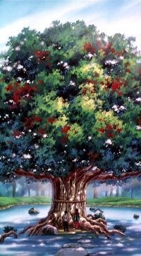
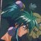
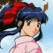

- Yes (1116)
- No (300)
- Don't know. (120)
How long have you been visiting the TMFFA?
- This is my first visit (388)
- A few days (81)
- A few weeks (85)
- A few months (640)
- Over a year (1198)
- A few years (647)
- Since its inception, 1997 (289)
If the TMFFA changed its color scheme, which do you prefer?
- Red (168)
- Orange (62)
- Yellow (Current) (352)
- Green (922)
- Blue (1110)
- Purple (319)
- Brown (111)
- Black (238)
- No Opinion (66)
Have you Seen Tenchi Muyo GXP (3rd TV Series)?
- Yes 269 (15%)
- No 1431 (84%)
- None (424)
- Elemantary/Primary (99)
- Jr, High/Secondary (340)
- Sr. High (288)
- Some College (290)
- Technical/2-year Degree (81)
- 4-year Degree (134)
- Graduate Student (35)
- Masters Degree (51)
- Doctoriate Degree (143)
Are you looking forward to the Third Tenchi OAV Series?
- Yes (2872)
- No (761)
- Undecided (125)
How often do you visit the TMFFA?
- A few times a year (93)
- A few times a month (280)
- A few times a week (872)
- A few times a day (31)
Who is your favorite Tenchi (manga only) character?
- Asahi Takabe 193 (7%)
- Hiwa Takahashi 89 (3%)
- Minagi 1311 (54%)
- Yume 251 (10%)
- Goghei 202 (8%)
- Ibara 376 (15%)
| Of the ones listed, who is you favorite Japanese
Tenchi Muyo voice actress?  |
|
 |
1. Ai Orikasa (970) Baiko from Saber Marionette J |
| 2. Yumi Takada (312) Ruuan from Mamotte Shugogetten |
|
| 3. Megumi Hayashibara (257) Ranma from Ranma 1/2 |
|
| 4. Yuri Amano (95) Ifurita from El Hazard |
|
|  | 5. Chisa Yokoyama (91) Sakura from Sakura Wars |
| 6. Yuko Kobayashi (47) Maron from Dragon Ball Z |
|
| 7. Yuko Mizutani (37) Chocolat Mis from Sorcerer Hunters |
|
| 8. Etsuko Kozakura (34) Alielle from El Hazard |
|
 |
9. Kikuko Inoue (32) Belldandy from Oh My Goddess |
| 10. Junko Iwao (18) Tomoyo from Card Captor Sakura |
|